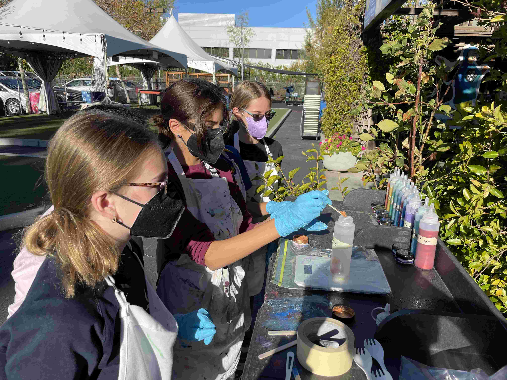
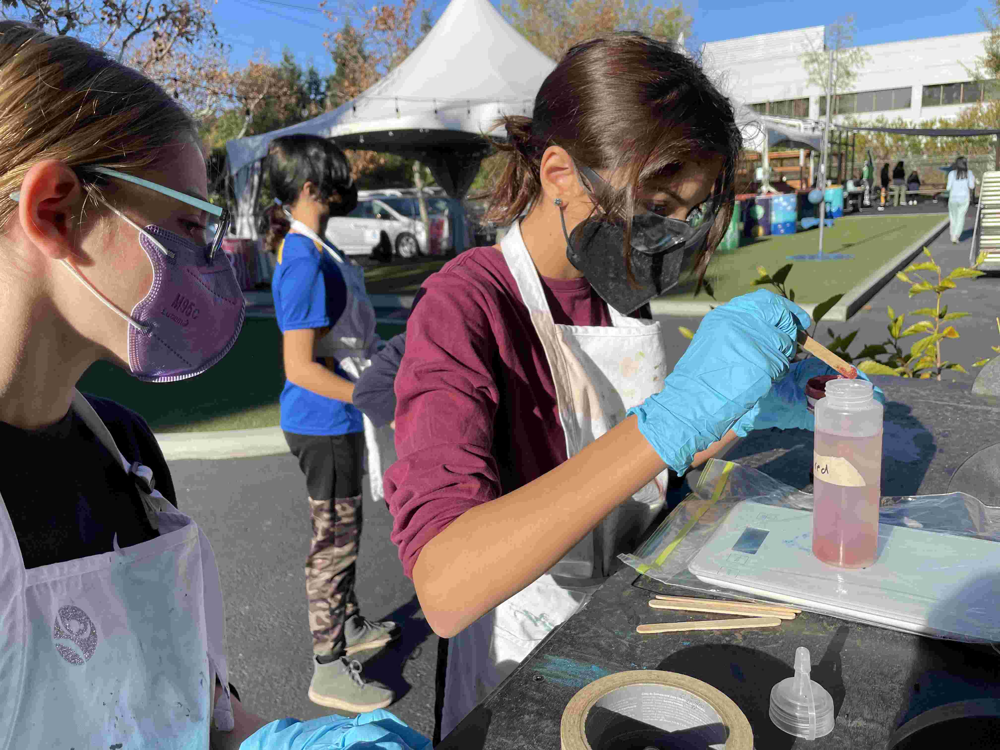
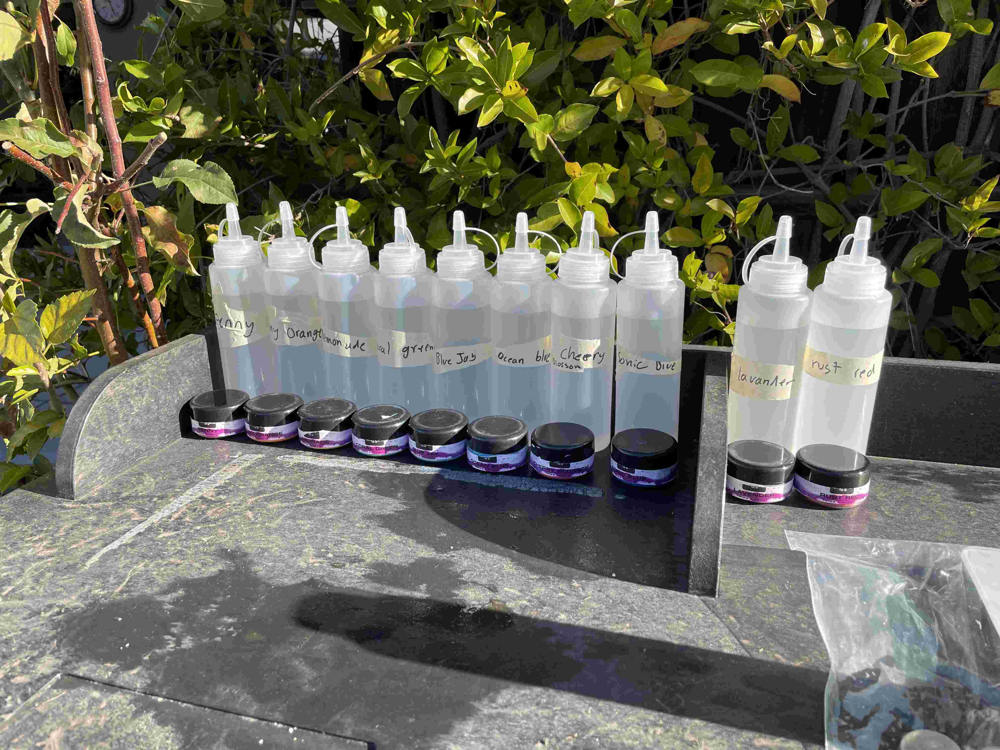
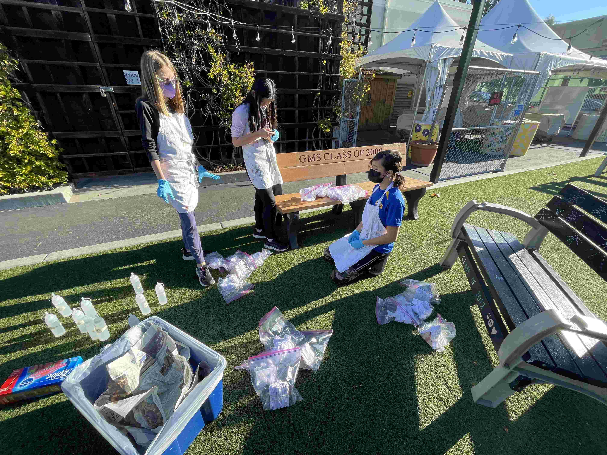
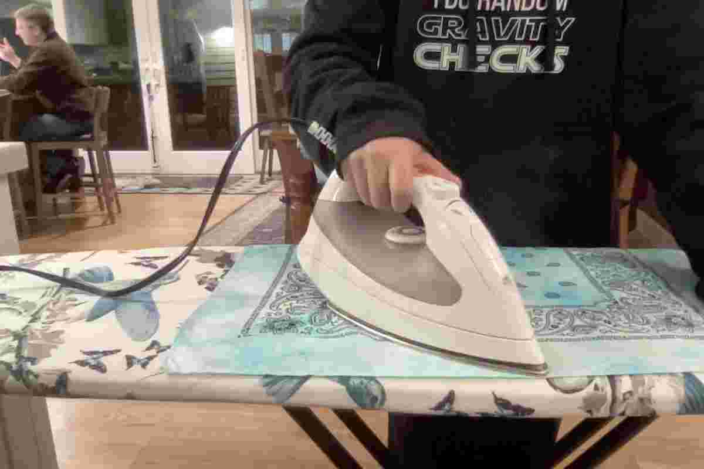
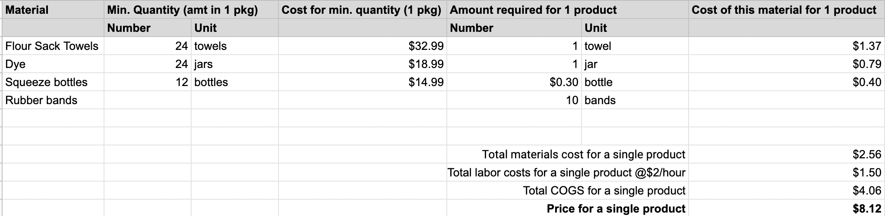
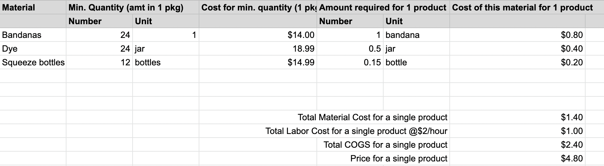
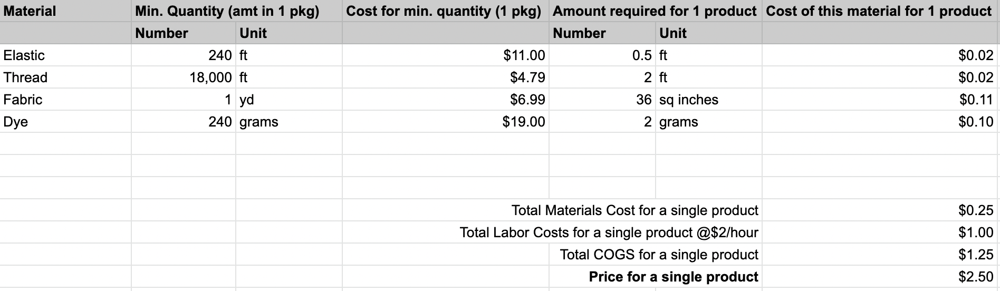

This is how we make our products!





We get most of our materials from this website!
When making the towels, we first get the towels and then mix the dye. After the dye is fully mixed we tie the towels into
the patterns that we want. Then we choose the coloring and dye them. Afterward we let them soak and then wash them. After we wash
them they don't bleed when they go through the washing machine.
For the bandanas we dye them the same way as the towels and wash them the same as well.
For the scrunchies we make the scrunchies with cloth, elastic, and string. To make them tie dye, we dye the cloth first, then cut them,
and make them into the scrunchies you get!
This is our cost of goods also known as COGS.
This is the towels cost of goods.

This is the bandanas cost of goods.

This is the scrunchies cost of goods.
